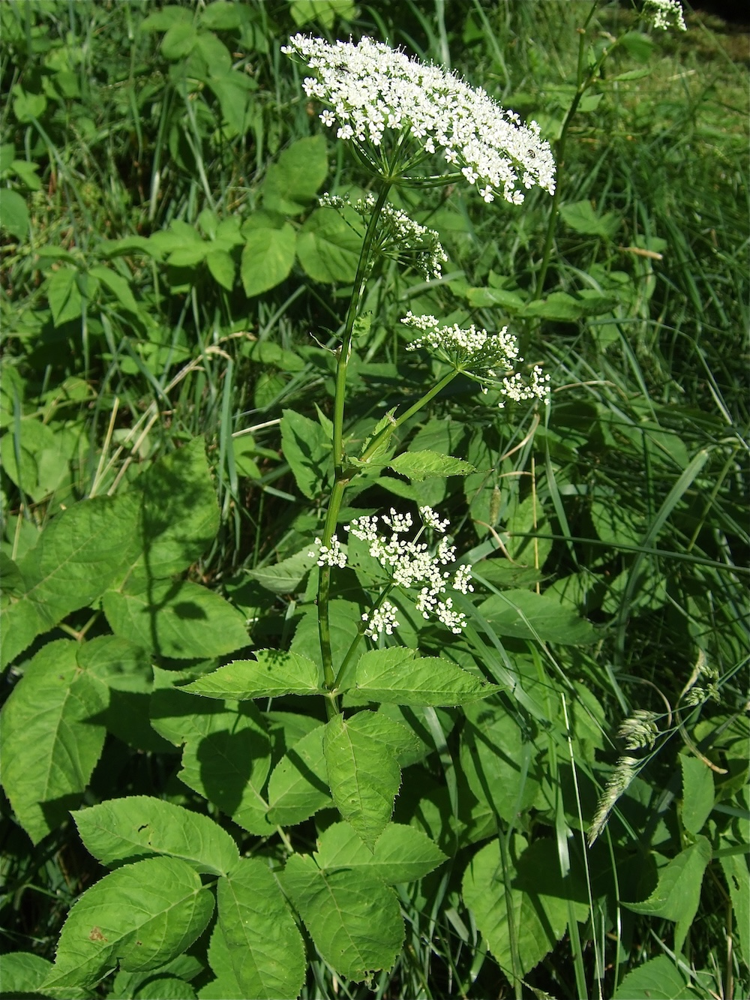

Die Pflanze, die niemand loswird
Wer einmal Giersch im Garten hat, hat ihn fast für immer. Die Pflanze breitet sich über unterirdische, kriechende Rhizome aus, die bei der kleinsten Verletzung sofort neue Triebe bilden. Pflügen, hacken, jäten — alles bringt nur Vermehrung. Selbst der Versuch, ihn mit Folien zu ersticken, scheitert oft nach Monaten. Für Hobbygärtner DER Feind Nummer 1; und doch eine Pflanze mit erstaunlich nützlichen Seiten.
Wildgemüse vom Klosterhof
Im Mittelalter wurde Giersch in Klostergärten gezielt angebaut — als Frühlings-Wildgemüse. Die jungen Blätter schmecken petersilien-möhrenartig (typisch Doldenblütler) und sind essbar, schmackhaft und nährstoffreich. Wer ihn schon im Garten hat: nicht ausreißen — ernten! Smoothies, Salate, Spinat-Ersatz, Pesto. Der Trick ist, ihn als Nahrungspflanze zu sehen statt als Unkraut.